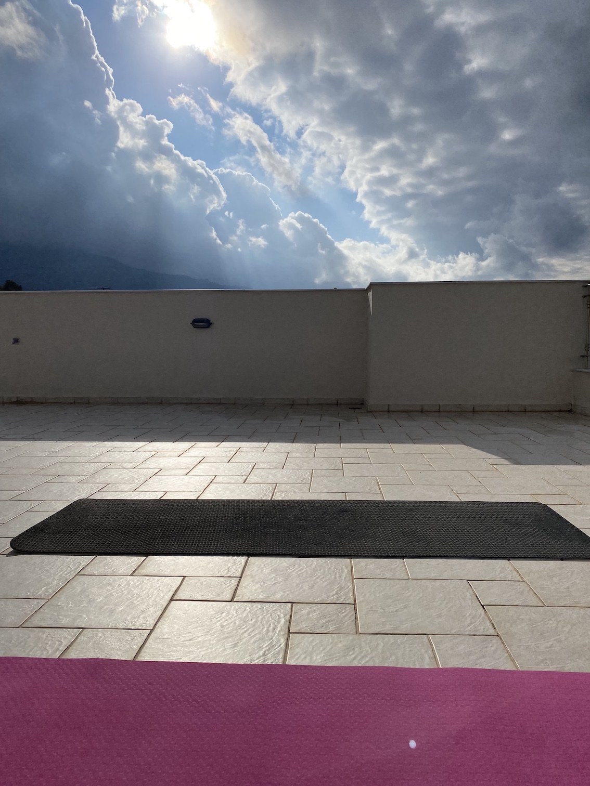
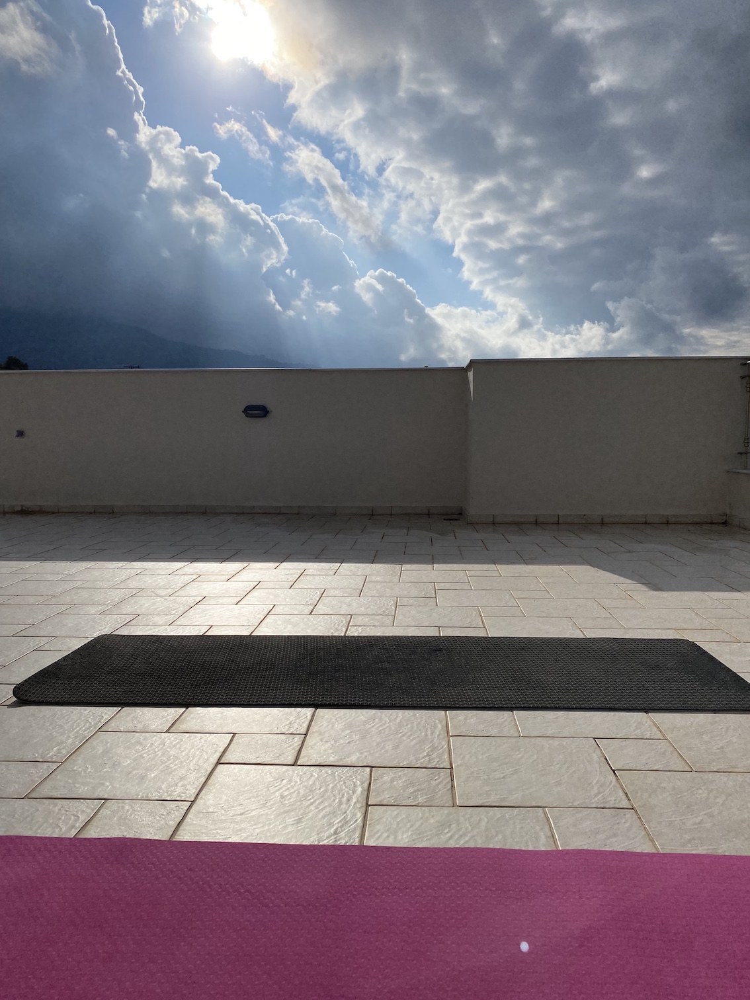
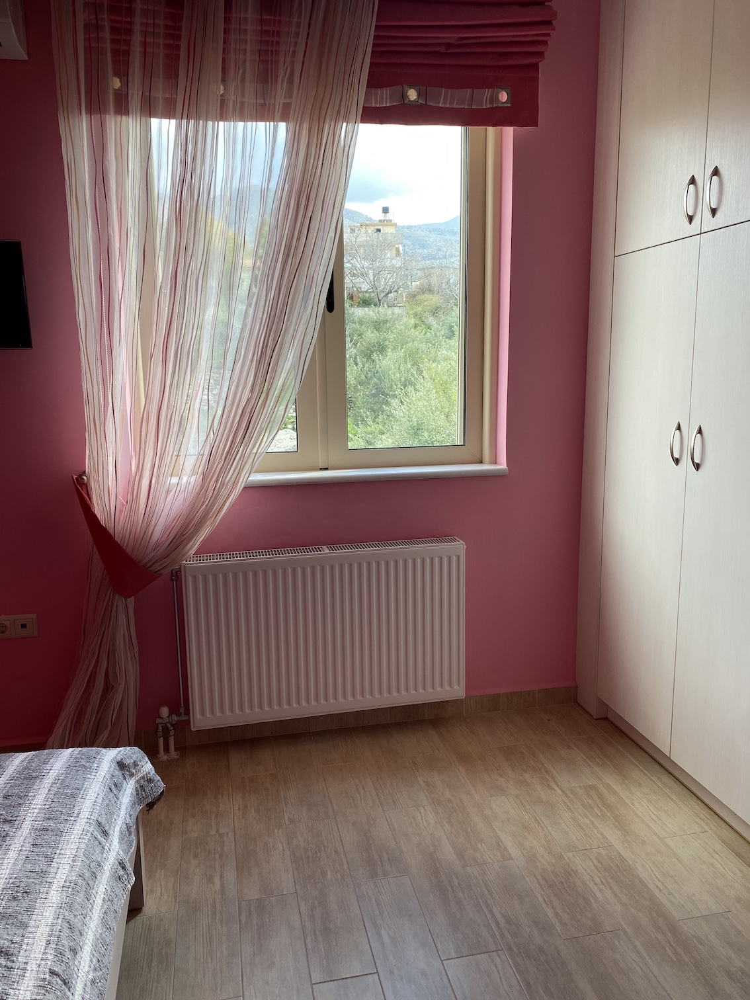
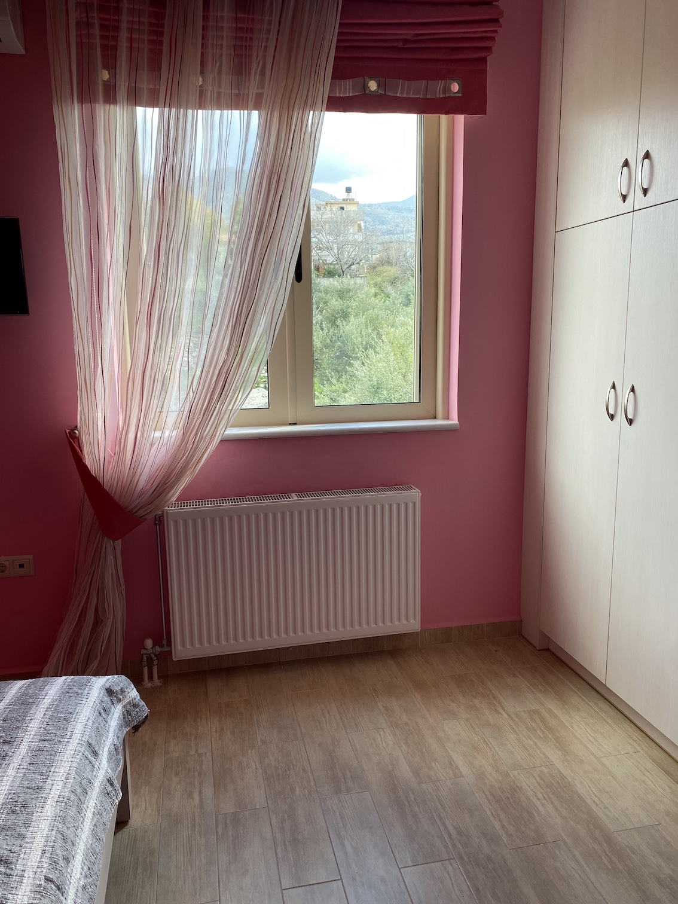
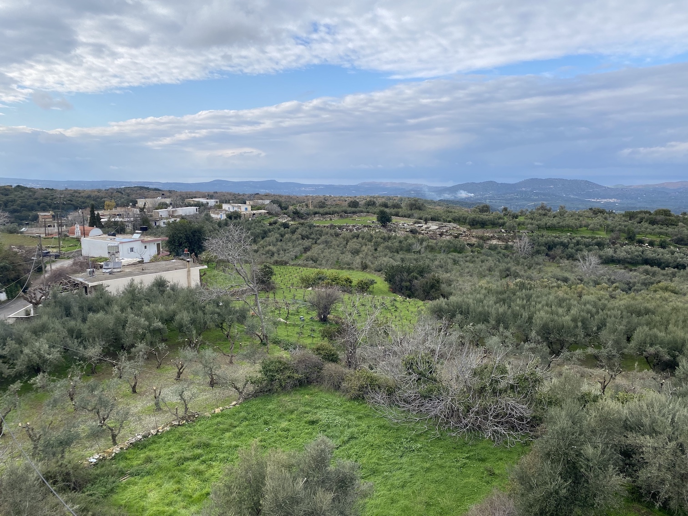
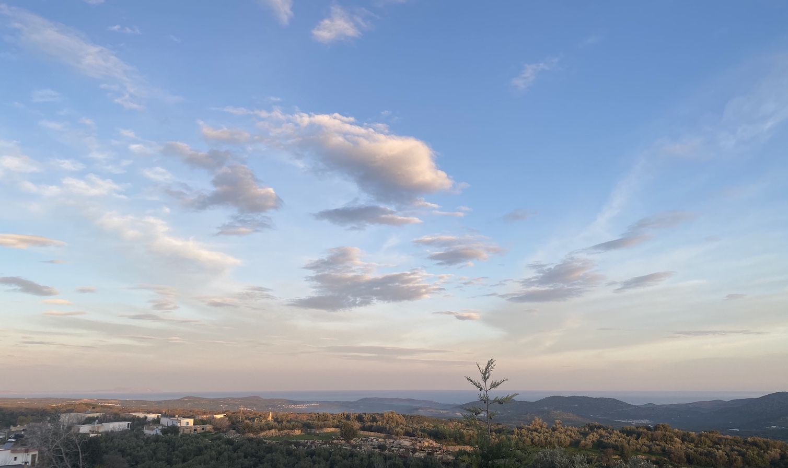
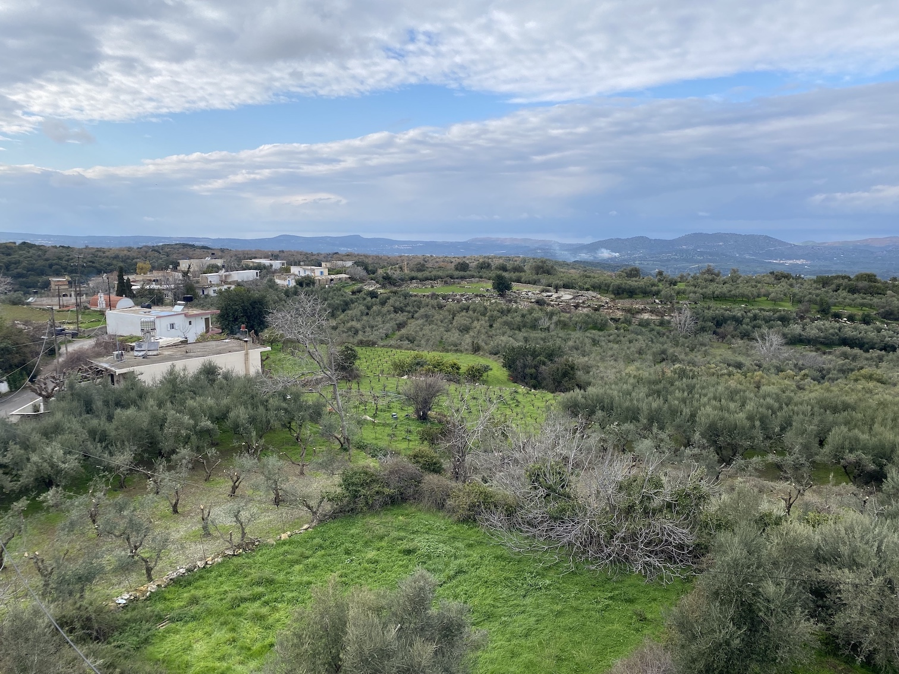
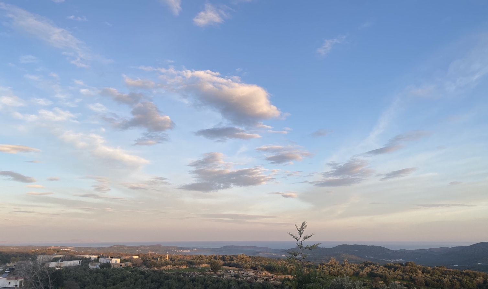

Aetheria serves as Black Sky Society's prototype Skylab, a transcendence-focused creative research center nestled between olive groves near the base of Mt. Ida. Set beneath the Mediterranean sky, this sanctuary provides the atmosphere where deep work and inner exploration converge, bridging the material and metaphysical through avant-garde science, art, and technology.
Our first Symposia—a series of symposium-style gatherings inspired by the Ancient Greek tradition—invites you to experience thought-provoking seminars, socratic dialogues, collaborative workshops, and opening and closing banquets where ancient wisdom meets the frontiers of science, existence, consciousness, and human potential.
SCHEDULE
Anabasis Prima (Opening Convergence)
Our opening symposium establishes the foundational groundwork for interdisciplinary inquiry. Stella R. Magnet introduces Black Sky Society and the metaphysical architecture guiding our investigations, while Giulio Prisco virtually unveils the emerging street science of irrational mechanics. Anastasia Kriuchkova presents her analytical approach to astrological phenomena, followed by a Socratic dialogue exploring intersections between ancient wisdom, theology, frontier exploration, and humanity's evolving potential — culminating in a symposiastic banquet where discourse flows alongside sustenance.
[show more]Noumenia Oneira
Noumenia, the ancient Greek celebration marking the beginning of each lunar month, becomes our inspiration. With the new moon as our guide, we open the first of our monthly lunar gatherings — Noumenia Oneira — a place to remember, reimagine, and realign. Anastasia guides us to draw rather than speak our intentions, using meditation and the five elements to create intuitive images. Daniela then conducts a live shamanic drum journey to transform image into energy and intention into path, beginning a lunar tradition of dreaming and activating with each New Moon. (Note: In-person only)
[show more]Psychro Cave Expedition
Journey to Psychro Cave in the Lasithi Plateau, where Titan Rhea allegedly gave birth to Zeus in secret to protect him from Cronos, who devoured his children to prevent his prophesied overthrow. Stunning stalactite formations create a natural cathedral within this sacred site. Participants with abilities to tap into subtle energies can optionally contribute their impressions to our Street Science research by documenting their intuitive sense of the location's role in the mythological narrative.
[show more]The Cave of Zeus: Decreating Cosmotechnics
The Psychro Cave in Crete carries a memory of the first apocalyptic passage of the gods that portends each technical recreation of the world. Hesiod tells of how the goddess Rhea "hid [Zeus] in a remote cave beneath the secret places of the holy earth", before Zeus led the Olympian gods to overthrow the old king Cronos and cast out the Titans. In the Statesman (269c-274d), Plato presents a new version of this myth, in which the 'Divine Pilot' (Theios Kybernētēs) rationally controls a cosmic "living creature" (Anima Mundi), "endowed with reason" by the divine Mind (Nous), and "framed" by the architecture of celestial mechanics. The collapse of this cybernetic system - from the first age of Cronos, when "God was supreme governor", to this subsequent age of Zeus, when "the pilot of the ship of the universe" has "let go the handle of its rudder" - results in the "cosmic crisis" of mortality, and of an intergenerational loss of memory, which requires - as both a remedy and poison - Prometheus to steal the gift of fire, and Haphaestus to invent technology. Yet, as Plato warns (Phaedrus, 274b–279b), the invention of writing, as an external aid to memory (hypomnēsis), can, in contrast to living recollection (anamnēsis), also become an occasion for increased forgetting, and, in our age of digital computer writing, for the compounding meta-crises that afflict modernity.
Drawing on Diotima’s speech in Plato’s Symposium (201e-205e), Simone Weil developed a theory of mediation as the aesthetic self-limitation of cycles of destructive force, which she observed reaching their height in the technical-bureaucratic apparatuses of the 20th century. While the erotic foundations of beauty are always structured around a lack, Weil calls for this lack to be oriented again towards its fulfilment in agapeic transcendence, which is preserved through a mystical decreation of our narcissistic imaginations, and which becomes ever-more concrete through an incarnational mediation of sacred harmonic and geometric correlations. Drawing, in a similar way on Henri Bergson's 'creative evolution', Teilhard de Chardin prophesied that the evolution of technical nature would culminate in the 'Omega-point' reversal of thermodynamic entropy, an ever-more ecstatic growth in the 'Noosphere' of celestial intelligence, and in the ultimate overcoming of Plato's 'cosmic crisis' through a free recognition of the 'hyperpersonality' that abides at the center of cosmotechnics and every cybernetic system. Join Anna K. Winters and Ryan Haecker on Saturday, 28th June from the island of Crete on a pilgrims journey from Simone Weil's modern re-activation of ancient insights to Teilhard de Chardin's techno-mystical vision of the hyperpersonality at the center of our world that sails on the vast ocean of spirit and life.
Gaia Synthesis (The Living Web)
In this symposium, the interconnected intelligence of Earth's systems meets human potential through ancient practices. MN Finkelstein guides participants through plant meditation as a somatic and molecular practice, exploring phase transitions and becoming-with plants through the lens of both affect and chemistry. Max Konstantinovsky examines how geospatial intelligence evolves into technologies that enhance Noospheric coherence and planetary awareness. Anahaa guides participants through Kriya Yoga to unlock dormant capacities, demonstrating how individual transformation ripples through the larger web of existence. This convergence reveals how personal practice becomes planetary healing.
[show more]Matala Metamorphosis (Caves of Transformation)
Journey to Matala's ancient cliff caves, carved in the Neolithic Age and later serving as the legendary landing place where Zeus, transformed into a white bull, brought Princess Europa before carrying her as an eagle to nearby Gortys. These same caves that once housed Minoan-era inhabitants and Roman generals became sanctuary for 1960s hippies seeking alternative ways of living—until they were expelled by conservative forces. We explore this liminal space where mythological transformation, ancient dwelling, and bohemian rebellion converge, investigating how places of power continue to attract those seeking liberation across millennia. The afternoon includes a seaside picnic and relaxed, off-the-record dialogue among these storied cliffs.
[show more]Astral Apogee (Summit & Descent)
Our final symposium examines sovereignty beyond current digital and political structures, exploring pathways toward truly autarkic systems that enable stellar civilization. Participants investigate the core challenges of post-web development while identifying synergies between digital sovereignty and humanity's cosmic trajectory, guided by principles of Agape that unite technological liberation with universal love. The day concludes with a banquet featuring performances and poetry, followed by participants gathering on the sanctuary roof for our closing ritual beneath the Mediterranean stars—sharing visions, breakthrough insights, and psychodestined trajectories while sound healing frequencies carry intentions into the aetheric realm. The evening ends not with conclusions but with individual and shared futures taking shape beneath the cosmos.
[show more]WANT TO CONTRIBUTE?
VIBE & SETTING


 



 



 





ACCOMMODATION
PARTICIPANTS
Giulio Prisco
Giulio is a repented scientist who used to work at places like CERN and the European Space Agency. He repented because he doesn't like the Thou-Shalt-Not diktats of the bureaucrats of science that he finds so annoying. He prefers the Yes-You-Can encouragements of highly imaginative scientists and engineers. He calls himself an irrational mechanic in protest against the bureaucrats of science that worship a logically flawed and obsolete form of “rationality.” He is on a crusade to show that good science is compatible with our weirdest aspirations and wildest dreams.
Giulio is virtual-only, offering office hours on an ad hoc basis, and an Irrational Mechanics seminar during Aetheria Symposia I.

Anna K. Winters
Anna is an independent scholar and Catholic convert with primary interests in philosophy and theology. She engages with the public on X (@tenshi_anna). She has published papers on AI and psychoanalysis (Seven Story Hotel, Issue 2, 2024), and in the context of her socio-philosophical project known as the Hegelian Egirls, ‘the Hegelian Egirls Manifesto’ (ŠUM #22, 2024). Her diverse educational background includes Marxism, sociology, philosophy, theology, and East Asian Studies. Drawing on Eastern philosophical traditions, she presented on ‘Anti-reductionist trends in philosophy and AI research’ in 2022 (VOCum Montreal). She is currently working on a book project under the title “Apocalypse: The Essence of Political Theology.”
Anna is based at Aetheria currently until July 5th. She is offering a seminar on 'The Cave of Zeus: Decreating Cosmotechnics' during Aetheria Symposia I.

Dr. Ryan Haecker
Ryan is a Fellow of the American Academy in Rome. He is a theologian and philosopher whose research in systematic and historical theology explores the absolute theological questions of logic, science, and technology. He is a member of the European Academy of Religions, a reviewer for Reviews of Religion and Theology, and serves on the editorial board of the journal Religions. His doctoral dissertation, supervised by Rowan Williams, 'Restoring Reason: Theology of Logic in Origen of Alexandria', explores theological interpretations of logic or ‘theology of logic’ in Origen of Alexandria, for the Church Fathers, and for modern Christian theology. He has previously studied history, philosophy, and theology at the University of Texas, the University of Würzburg, and the University of Nottingham.
Ryan is based at Aetheria from June 22-19th. He is offering a seminar on 'The Cave of Zeus: Decreating Cosmotechnics' during Aetheria Symposia I.

Anastasia Kriuchkova
Anastasia is an astrologist and energy practitioner who brings a unique analytical perspective to her spiritual work, with a mathematics background from Moscow State University, PhD studies in statistics at the University of Kentucky, and experience as an IT consultant and software company co-owner. Through energy work including Reiki and elemental energies, she helps people overcome challenges and find energetic support for their life paths while investigating methods for achieving personal balance and deeper self-knowledge.
Anastasia is living on Crete permanently, and will be making regular visits to Aetheria. She offers reiki and astrology consultations starting at €30. She will be giving a talk during Aetheria Symposia I about how she approaches astrology as a science for understanding how individuals manifest their birth energies and navigate planetary cycles, rather than as mystical practice.
Monikka de la Zerda
Monikka de la Zerda is a software developer with over a decade of experience at the intersection of sustainability, technology, and transformation. She has held leadership roles in the clean energy sector, co-founded multiple mission-driven companies, and actively contributes to initiatives that expand equitable access to technology for underrepresented communities. As a Reiki and Sekhem Master, she channels ancient healing modalities to support transformation and balance. Through her role as a co-founder of Black Sky Society, she supports a global community in navigating the digital and energetic realms with clarity, ethics, and purpose.
Monikka de la Zerda is virtual-only, offering complimentary distance energy healing sessions to residents, providing a space for restoration and alignment.
MN Finkelstein
MN is a feral technologist and molecular warlock exploring plant intelligence, code, and revolt into tools for collective awakening. Their work dissolves the lines between chemistry and consciousness, machine and myth, using ritual, herbs, and decentralized systems to rewire the nervous system and unmask the real. With roots in high finance, underground publishing, and radical care, they craft rogue protocols for spiritual insurgency, systemic undoing, and daimonology.
Daniela Danzer
Daniela Danzer has followed her intuitive path from Vienna to Crete, where she lives off-grid with her family on their animal rescue farm. For over 15 years, her shamanic journey has unfolded through personal experiences and magical synchronicities, guided by her deep connection to animals, plants, and spirits. She and her husband built their sustainable life from scratch, reforesting their land in collaboration with Mother Earth.
For Daniela, there is no separation between material and spiritual worlds—she follows the signs using her body as compass and her third eye to perceive what remains invisible, believing that resonance, patience, and trust in universal timing guide us along the path that is itself the destination.

Anahaa
Anahaa is a personal development mentor and Kriya Yoga teacher with over 8 years of experience in yoga and 2 years of experience specifically teaching Kriya. Her work centers around energetic alignment and manifestation, supporting individuals in tuning their internal frequency to match the life they’re ready to live.
Anahaa is virtual-only, and will be giving a talk about Kriya Yoga and leading a Kriya Yoga set during Aetheria Symposia I.
Stella R. Magnet
Stella R. Magnet, founder of Aetheria and co-founder of Black Sky Society, is Aetheria's primary resident. Her self-guided and experiential research over the last eight years has centered on cryptoeconomic network design related to large-scale cooperation networks. She has contributed governance, mechanisms, product, and vibes to over 10 different DAOs or open source projects. She's writing a book that explores her emerging path to transcendence through synchronicities connecting Philip K. Dick, VALIS, and Jack Parsons. The work chronicles her journey from substance abuse and bipolar disorder to understanding her consciousness, particularly its perception of apocalyptic timelines when peering into Parsons' Babalon working.
Stella holds office hours on an ad hoc basis locally at Aetheria.
SITES & ATTRACTIONS